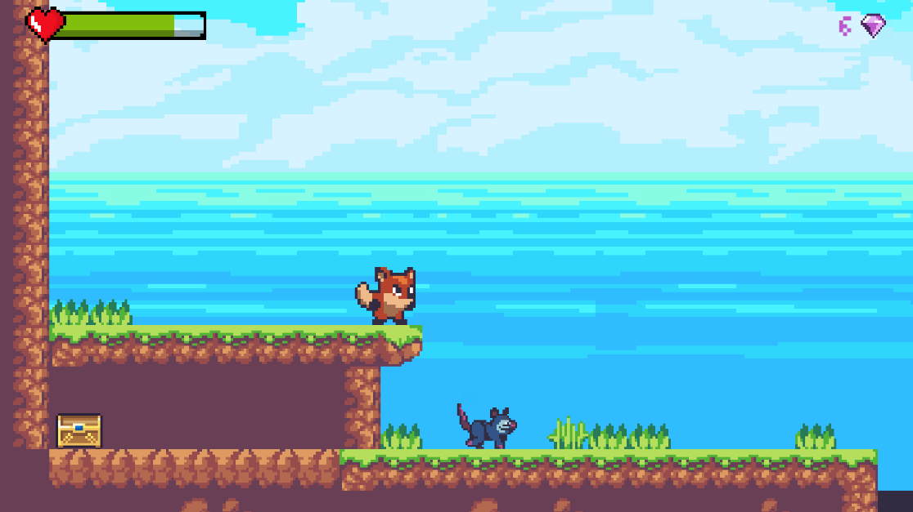

Aku Twins
Aku Twins est un jeu vidéo qui pour but l'apprentissage et la création d'un jeux vidéo avec l'utilisation de Unity et du langage C#.

Le Style du jeu
Le jeu est en 2D avec les mêmes dynamiques que Super Mario Bros.L'histoire
Nous suivons un jeune héros sortant de son village natal pour devenir aventurier dans la capital.A son arrivée dans la capitale, le jeune héros va sauver des soeurs jumelle.
Après avoir remercié le héros, les soeurs jumelles décident de former un groupe pour rembourser leurs dettes envers le héros.
Le langage
C#.EDI
Unity.Annexe
Pour ce projet, j'utilise les vidéos Youtube de Tuto Unity FR et la documentation de Unity et C#.GitHub Lien vers le repository GitHub.
GitHub Lien vers le repository GitHub du build du jeu (pour windows)